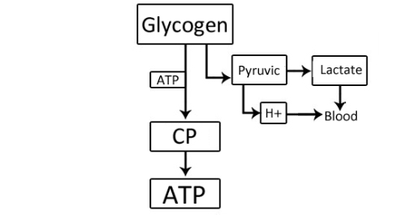

We continue to go into the topics of the ADVANCED level, giving you more information on how and what works in our body. We hope, that the infoposts are not too difficult for comprehension, but if something is not clear at first, we recommend you to read it one more time. Well, today we will talk about a thing, which excites many participants of our program.
We should mention that the exact mechanism of muscle growth is still unknown. Scientists have not yet agreed on whether new muscle fibers appear, or the already existing ones split and thicken, and how much all this is tied into genetics. But we can distinguish 4 factors that are necessary to ensure the muscle mass growth:
1. The increase in anabolic hormones concentration in the blood
2. The increase in the free creatine concentration in the muscles
3. The increase in the concentration of hydrogen ions in the muscles
4. The store of amino acids in a cell
The word "factors" is used here, since the causal relationship between them and the muscle growth has not been studied fully. Although their effect is experimentally proved, but the reasons and the way of their work are still unclear.
1. 1. The increase in anabolic hormones concentration in the blood
Information
Anabolism is a combination of the chemical processes that make up one of the sides of the metabolism in the body, aimed at the formation of cells and tissues.
Anabolic hormones are hormones secreted by the body, which serve as a signal for starting anabolism.
Anabolic hormones are hormones secreted by the body, which serve as a signal for starting anabolism.
This is the most important one among 4 factors we’re considering today. That’s because the process of synthesis of myofibrils (muscular fibrils) in a cell is initiated with nothing but this factor. An increase in the concentration of anabolic hormones in the blood occurs under the influence of the physiological stress, which is achieved as a result of “reps till failure”(when you’re not physically able to perform this exercise anymore) in a set. During the training hormones enter the cell, but can’t go back. So the more sets are made, the more hormones will be inside the cell.
Influenced by hormones, various structures are formed in muscular fibrils. They take part in the synthesis of protein molecules. It should be noted, that the anabolic hormones are fully utilized within the cell during several days, while synthesizing proteins.
How to achieve? Your training should create stress for your body.
What does STREES mean?
Stress, in this case, is understood as such a level of workout load, which your body wasn’t ready to perform. If you take the current level of your fitness as a reference point, then the more you move away from it directing to the increase of the load, the more intensive will be the stress for your body.
Let’s suppose you do 30 pull ups during a training (5 times in 6 sets). Your body got used to this load, so this will be a starting point for us. If you keep all other introductory training terms (including tempo, type of pull-ups, etc., etc.), then when you make more than 30 pull-ups during the next workout, it will be stress for the body. If you do 40, 35 or even 31 pull-ups - there’ll still be stress. Of course, if you make 35, it will be more stress than 31. But 31 will be stressful already, because you haven’t had such a load before. However, if you do 30 or fewer repetitions, then there will be no stress. There is such a thing, called adaptation. Your body likes to use it and even manages to be one of the best adaptation masters in the world. Therefore, the thing which was a stress for you once, will be no longer stressful because of adaptation.
Lewis Carroll said: We must run as fast as we can, just to stay in place. And if you wish to go anywhere you must run twice as fast as that!
2. The increase in the free creatine concentration in the muscles
The accumulation of free creatine in the sarcoplasm (the uncontracted part of a muscle) serves as a criterion for the intensification of metabolism in a cell.

Creatine phosphate (Phosphocreatine, CP, PCr) transports energy from mitochondrias to myofibrils in oxidative muscle fibers (OMF) and from sarcoplasmic ATP to myofibrillar ATP in glycolytic muscle fibers (GMF). In the same way, it transports energy to the nucleus of a cell, to the nuclear ATP. If the muscle fiber is activated, then ATP is also consumed in the nucleus. And for the resynthesis of ATP Creatine Phosphate is required from the outside, because there are no other sources of energy for the resynthesis of ATP in the nucleus (there are no mitochondria).
Although all the organelles of the body are regularly renewed (this process continues constantly), but as a result of training, which leads to the activity of muscle fibers, the accumulation of free creatine occurs in the sarcoplasm. It means that there are active metabolic and plastic processes. Nuclear CP(creatine phosphate) gives energy for the resynthesis of ATP, free creatine moves to the mitochondria, where it is again resynthesized in CP. Thus, a part of CP is included in the energy supply of the nucleus of a cell. That’s why all the plastic processes there are greatly activated.
How to achieve? Your training should be create stress for your body.
3. The increase in the concentration of hydrogen ions in the muscles
The increase in the concentration of hydrogen ions causes the enlargement of pores in the membranes. It leads to the easier penetration of hormones into a cell, it activates the action of enzymes and facilitates the access of hormones to genetic information (to DNA molecules).
During a performance of the exercises in a dynamic mode, myofibrils in the OMF do not grow (despite the fact they also participate in the work, as well as GMF). It happens because only 3/4 muscle growth factors are activated there. Due to the large number of mitochondria and the constant delivery of oxygen to the blood during an exercise, there is no accumulation of hydrogen ions in the OMF sarcoplasm. Therefore, hormones can not enter a cell and the anabolic processes do not appear. Hydrogen ions activate all processes in a cell. A cell is activated, nerve impulses run through it, and, these impulses cause the myosatellites to begin forming new nuclei. At a high impulse frequency, the nuclei for the FMF(fast muscle fibers) are created, at low - the nuclei for the SMF(slow muscle fibers).
But one should remember that acidification ought not to be excessive, otherwise hydrogen ions will begin destroying the protein structures of a cell and the level of catabolic processes in the cell will begin to prevail the anabolic processes level.
How to achieve it? Do reps till muscle failure.
4. The store of amino acids in a cell
And last, but not least, factor for today is the presence of the necessary amount of amino acids in a cell. Amino acids are like building blocks, of which proteins are built, so are muscles. This factor is connected not with the training process, but with keeping healthy and proper diet.
The accumulation of amino acids in a cell occurs gradually in the form of an amino acid pool, so there is no need to increase the amino acid level in the blood right before or during the exercise. In turn, protein synthesis occurs within the next 24 hours after a strength training, so it is necessary to provide the body with the necessary amount of protein just during a few days after the training. By the way, an accelerated metabolism, within 2-3 days after a strength training, is a circumstantial sign of it.
How to achieve it? Always provide your body with the necessary meal.
In addition
The process of new myofibrils building lasts 7-15 days, but the most active accumulation of ribosomes occurs during a training and the first hours after it. Hydrogen ions do their job both during a training and in the nearest hour after it. Hormones work and decode the DNA information during 2-3 more days. But they do it not as intensively as during the training period, when this process is also activated by an increased concentration of free creatine.